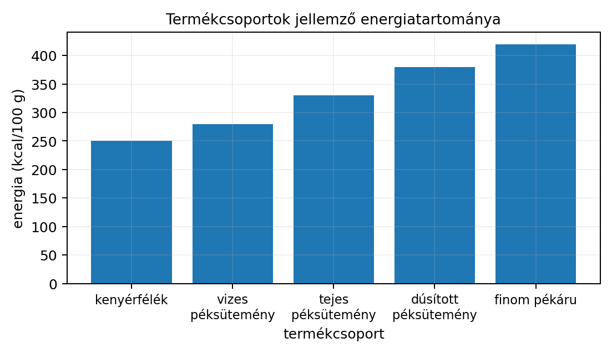

Amikor reggel belépsz a pékségbe, a polcokon egymás mellett látod a nagy, ropogós kenyereket, a kisebb zsemléket, a leveles süteményeket és a fánkot. Ha csak „pékáruként” gondolsz rájuk, akkor nem tudod megmondani, melyikhez milyen tésztakészítési mód, kelesztési idő, sütési hőmérséklet vagy éppen lisztfajta illik. A termékek csoportosítása azért dolgozó tudás, mert a csoport határozza meg a gyártmánylapot, az anyagnormát, a gépeket és a minőségi követelményeket. Ugyanígy a táplálkozási ismeret akkor válik gyakorlativá, amikor a vásárló rostban gazdag kenyeret keres, vagy amikor a pékség csökkentett sótartalmú terméket fejleszt. Ebben az alfejezetben felépítjük a sütőipari termékcsoportok rendszerét, és megnézzük, miért fontos a kenyér és a teljes kiőrlésű termékek táplálkozási szerepe.
A sütőipari termékcsoportok között az egyik legszembetűnőbb különbség a zsiradék- és cukortartalom, ezért az energiatartalom is eltérő. Az alábbi ábra a leggyakoribb csoportok jellemző energiatartalmát szemlélteti 100 gramm késztermékre vetítve, tanulási példaként.

Az ábra azt mutatja, hogy a kenyérfélék általában kisebb energiasűrűségűek, mint a dúsított tészták vagy a finom pékáruk. A különbség oka a zsiradék, a cukor és a tojás mennyisége, illetve a termék víztartalma. A pontos értékek mindig a receptúrából számíthatók, és a termékjelölésnél kötelező lehet feltüntetni őket.
Definíció. A sütőipari termékeket a felhasznált nyersanyagok aránya, a tésztakészítési technológia, a termék alakja, mérete és a késztermék jellege alapján csoportosítjuk. A gyakorlatban négy főcsoportot különítünk el: kenyérfélék, péksütemények, finom pékáruk és egyéb sütőipari termékek.
Kenyérfélék. Ide tartoznak a jellemzően 250 gramm feletti késztömegű, általában kovászolt vagy élesztővel lazított, sütőformában vagy szabadon sütött, nagy víztartalmú termékek. Jellemző példák: búzakenyér, félbarna kenyér, rozsos kenyér, rozskenyér, teljes kiőrlésű kenyér. A kenyér az alapélelmiszer-szerepű termékcsoport, ezért minőségi követelményei szigorúbbak, és táplálkozási jelentősége kiemelkedő.
Péksütemények. A kenyérféléknél kisebb, jellemzően 30–150 gramm késztömegű, változatos alakú termékek. A besorolást nem a tömeg, hanem az összetétel és a termékleírás dönti el (ellenőrizendő: a Magyar Élelmiszerkönyv sütőipari termékekre vonatkozó előírásának csoportosítása és tömeghatárai). A tészta a felhasznált anyagok szerint lehet:
A három tésztacsoport jellegzetes termékeit az alábbi tabló egymás alatti sávokban mutatja: a vizes tésztából készült termékek (1–3) fehér, a tejes tésztából készültek (4–6) világosszürke, a dúsított tésztából készültek (7–9) középszürke kitöltéssel, közös, szemléltető méretléccel. A tablón csak péksütemények szerepelnek: a kenyérfélék külön főcsoport, a kalács és a briós pedig finom pékáru.
Figyeld meg, hogy a forma önmagában nem dönti el a csoportot: a vizes kifli (2), a tejes kifli (4) és a vajas kifli (7) alakja szinte azonos, a különbség a receptúrában van (tej vagy tejpor, több zsiradék, cukor, tojás), ezért a besorolást mindig a gyártmánylap alapján végezd. A HTML-kiadásban a „Csoportosítsd!” gyakorlóban a termékeket magad sorolhatod be a három csoportba, visszajelzéssel.
Finom pékáruk. Olyan gazdagabb összetételű termékek, amelyeknél a zsiradék, a cukor vagy a tojás mennyisége már jelentősen befolyásolja a tészta jellegét és a feldolgozást. Fő alcsoportjai:
Egyéb sütőipari termékek. Ide soroljuk azokat a készítményeket, amelyek technológiája eltér a fentiektől, vagy speciális célú termékek: perecfélék, fánkok és zsírban sütött termékek, tartós kenyerek és kétszersültek, morzsa, babajka, valamint diétás és „-mentes” (pl. gluténmentes), hagyományos és ökológiai termékek. Ez a csoport heterogén; a részletes szabályokat a termékfejezetek tartalmazzák.
Továbbvitt eredmény. Ezt a termékcsoport-rendszert használjuk a későbbi fejezetekben: a Kenyérfélék, a Péksütemények, a Finom pékáruk és az Egyéb sütőipari termékek fejezetek az itt felépített csoportokra építenek. Az alfejezet fogalmait az A nyersanyagok csoportosítása és alapvető jellemzői is átveszi, mert a nyersanyagokat a termékcsoportok technológiai igényei szerint rendszerezi. A hagyományos magyar termékek később a Hagyományos (HÍR) és korszerű (öko, bio) sütőipari termékek alfejezetben, a mézes készítmények pedig itt kerülnek elő: A mézeskalácsos mesterség és a mézes készítmények.
A sütőipari termékek energia- és tápanyagforrást jelentenek. A gabona alapú termékek fogyasztása Magyarországon és Európában is jelentős, ezért a péknek értenie kell a fő tápanyagok szerepét.
Szénhidrát. A lisztben lévő keményítő a sütőipari termékek fő energiahordozója. A szénhidrát az emberi szervezet számára gyorsan hozzáférhető energia, de felszívódását lassíthatja a rost. A fehér kenyérben kevesebb, a teljes kiőrlésű termékekben több az élelmi rost, ezért az utóbbiak vércukoremelő hatása mérsékeltebb lehet (ellenőrizendő: a termék tényleges összetétele és a vonatkozó táplálkozási ajánlások).
Rost. Az élelmi rost a búza héjrészeiben, a korpában és a teljes kiőrlésű lisztben található növényi rostanyag. Támogatja a bélműködést, növeli a jóllakottság érzését, és hozzájárul a széklet megfelelő állagához. A kenyér és a teljes kiőrlésű termékek azért fontosak, mert rendszeres fogyasztásukkal jelentős mennyiségű rosthoz juthat a szervezet. A fehér lisztből készült termékek rosttartalma alacsony.
Fehérje. A búzaliszt sikérfehérjéi (gliadin és glutenin) a tészta szerkezetét is kialakítják, de táplálkozási szempontból a gabonafehérjék nem tartalmazzák minden esszenciális aminosavat optimális arányban. Ezért a gabonafélék fehérjéjét más fehérjeforrásokkal (tej, tojás, hüvelyesek) érdemes kiegészíteni. A kenyér önmagában is ad fehérjét, de nem teljes értékű.
Só. A sütőipari termékek egyik legfontosabb technológiai és érzékszervi összetevője a só (nátrium-klorid). A só szerepe nem csak ízesítés: befolyásolja a tészta reológiai tulajdonságait, szabályozza az élesztő működését, javítja a termék térfogatát és eltarthatóságát. Ugyanakkor a túlzott sóbevitel magas vérnyomáshoz és szív-érrendszeri betegségekhez járulhat hozzá. Ezért a só mennyiségét a receptúrában pontosan kell tartani, és a sócsökkentés szempontjait fokozatosan érvényesíteni.
A magyar sütőipari hagyományok több olyan terméket őriznek, amelyek ma is népszerűek. Ilyenek például:
Ezek egy része a HÍR (Hagyományok–Ízek–Régiók) gyűjteményben is szerepelhet, amely a hagyományos és tájjellegű élelmiszerek nyilvántartása (ellenőrizendő: aktuális HÍR-lista és a vonatkozó minőségi előírások). A hagyományos termékeknél különösen fontos az eredeti technológiai lépések és a helyi nyersanyagok tisztelete, ugyanakkor a mai élelmiszer-biztonsági és jelölési követelményeket is be kell tartani.
A közegészségügyi ajánlások és a fogyasztói igények két irányba mozdítják el a sütőipart: a sóbevitel csökkentése és a teljes kiőrlésű termékek arányának növelése.
Sócsökkentés. A népegészségügyi programok a lakosság sóbevitelének fokozatos csökkentését szorgalmazzák, mert a magas nátriumbevitel összefüggésbe hozható a magas vérnyomással (ellenőrizendő: aktuális hazai és uniós sócsökkentési ajánlások, sütőipari irányelvek). A pék számára a sócsökkentés technológiai kihívás: a kevesebb só gyengébb sikérvázat, gyorsabb élesztőműködést, sűrűbb bélzetet és rövidebb eltarthatóságot okozhat. Ezért a csökkentést kis lépésekben, próbasütéssel és a tésztavezetés módosításával kell elvégezni.
Teljes kiőrlésű trend. A teljes kiőrlésű liszt a gabonaszem héj- és csírarészeit is tartalmazza, ezért rostban, B-vitaminokban és ásványi anyagokban gazdagabb. A fogyasztók egyre gyakrabban keresnek teljes kiőrlésű kenyeret, zsemlét és kalácsot. A péknek azonban ismernie kell a különbséget: a teljes kiőrlésű jelölés csak akkor használható, ha a termék megfelel az előírt feltételeknek (ellenőrizendő: a Magyar Élelmiszerkönyv és az 1169/2011/EU rendelet vonatkozó előírásai, illetve a nemzeti útmutató). Technológiailag a teljes kiőrlésű liszt több vizet vesz fel, a tészta ragadósabb, a sikérhálózat gyengébb, ezért gyakran kovászolást, hosszabb pihentetést vagy adalékanyagot alkalmaznak.
Példa 1 – egyszerű besorolás. Egy 60 g késztömegű, lisztből, vízből, élesztőből, sóból és 2% zsiradékból készült, hosszúkásra formázott terméket szeretnénk beazonosítani. Mivel a késztömeg 30–150 g közötti, a tészta folyadékalapja víz, és a zsiradék mennyisége kicsi, ezért vizes péksütemény (például vizes kifli) csoportba tartozik.
Példa 2 – összetettebb besorolás indoklással. Egy 500 g késztömegű termék összetevői: teljes kiőrlésű búzaliszt, víz, élesztő, só, kovász. A termék nagy, kenyérforma, és teljes kiőrlésű lisztből készül. Ezért a kenyérfélék csoportjába tartozik, azon belül teljes kiőrlésű kenyér. A táplálkozási értéke magasabb rosttartalmú, mint a fehér kenyérnek. A „teljes kiőrlésű” jelölés feltételeit azonban a gyártmánylap és a hatályos előírás rögzíti.
Egy kis pékségben a reggeli műszakban a vezető azt kéri, hogy a pultban lévő új terméket sorolják be, mert délután leltározáskor a készletnyilvántartásban termékcsoport szerint kell szerepeltetni. A tanuló megnézi a gyártmánylapot: a termék lisztből, tejből, vajból, cukorból, tojásból, élesztőből és sóból készül, késztömege 250 g, fonott alakú. A zsiradék- és cukortartalom magas, a tojás is jelen van, ezért a finom pékáruk csoportjába, azon belül a tojással dúsított tészták közé sorolják (például foszlós fonott kalács). A csoportosítás segít abban, hogy a technológiai lap, a kelesztési és sütési paraméterek, valamint az allergénjelölés is a megfelelő csoporthoz igazodjon.
A termékcsoportba sorolás helyességét a gyártmánylap, a receptúra és a késztermék jellemzői alapján ellenőrizzük. A félre sorolás hibás technológiai lapot, rossz kelesztési vagy sütési paramétereket és hiányos allergénjelölést okozhat. A táplálkozási állítások (például „csökkentett sótartalmú” vagy „teljes kiőrlésű”) csak akkor szerepelhetnek a terméken, ha az összetétel és a jelölés megfelel az előírásoknak. Ezért a minőség-ellenőrzés része a technológiai lap és a termékcímke egyeztetése.
A válaszokat a Megoldások elején találod.
1. feladat (A). Nevezd meg a sütőipari termékek négy főcsoportját, és mindegyikre mondj egy-egy példát!
2. feladat (A). Melyik termékcsoportba tartozik a vizes zsemle, a briós és a kifli? Indokold a besorolást!
3. feladat (B). Sorold be a következő termékeket a megfelelő fő- és alcsoportba: teljes kiőrlésű kenyér, fonott kalács, leveles vajastészta, perec, fánk, omlós linzer.
4. feladat (B). Magyarázd el, miért fontos a teljes kiőrlésű lisztből készült kenyér élelmirost-tartalma! Melyik tápanyagot csökkentjük a sócsökkentéssel, és milyen egészségügyi kockázatot mérsékelhetünk ezzel?
5. feladat (C). Egy termék címkéjén az szerepel: „rozsos kenyér”. Az összetevők: búzaliszt, rozsliszt, víz, élesztő, só. Melyik termékcsoportba tartozik? Mi a búzaliszt szerepe? Miért nem nevezhető teljes kiőrlésűnek, ha a liszt nem teljes kiőrlésű?
6. feladat (D). Egy pékség új terméket fejleszt: „tönkölybúzás, csökkentett sótartalmú teljes kiőrlésű zsemle”. Melyik termékcsoportba sorolnád be? Milyen technológiai szempontokat kell figyelembe venni a só csökkentésekor? Nevezz meg legalább két kockázatot!
A négy főcsoport: kenyérfélék (búzakenyér), péksütemények (vizes zsemle), finom pékáruk (briós), egyéb sütőipari termékek (perec).
A vizes zsemle a péksütemények közé tartozik (vizes tészta, mert liszt, víz, élesztő, só, kevés zsiradék). A briós a finom pékáruk csoportjába (tojással dúsított tészta, magas tojás- és zsiradéktartalom). A kifli lehet vizes vagy tejes tészta, a receptúrától függően; ha liszt, víz, élesztő, só és kevés zsiradék, akkor vizes péksütemény.
A teljes kiőrlésű lisztben a gabonaszem héj- és csírarészei is jelen vannak, ezért a rosttartalom magasabb. Az élelmi rost támogatja a bélműködést, növeli a jóllakottság érzését, és mérsékli a vércukorszint gyors emelkedését. A sócsökkentéssel a nátriumbevitelt mérsékeljük, ami a magas vérnyomás és a szív-érrendszeri betegségek kockázatának csökkentését segítheti.
A termék a kenyérfélék csoportjába tartozik (rozsos kenyér, mert rozslisztet is tartalmaz). A búzaliszt szerepe a sikérhálózat kialakítása, mert a rozsliszt kevésbé képes erős sikérvázat alkotni. A termék azért nem nevezhető teljes kiőrlésűnek, mert az összetevők között nem szerepel teljes kiőrlésű liszt; a teljes kiőrlésű jelöléshez teljes kiőrlésű lisztet kell használni, és a feltételeknek meg kell felelni.
A termék a péksütemények csoportjába tartozna (tönkölybúzás, teljes kiőrlésű zsemle), bár a teljes kiőrlésű jelölés miatt a pontos besorolást a gyártmánylap és az előírások szerint kell elvégezni. A só csökkentésekor figyelni kell arra, hogy a só a sikérvázat erősíti és az élesztő működését szabályozza. Két kockázat: gyengébb tésztaszerkezet, ami sülés közben összeeshet; gyorsabb erjedés, ami túlkelesztéshez vezethet. Ezért a só csökkentését kisebb lépésekben, próbasütéssel és esetleg a tésztavezetés módosításával kell megoldani.
A sütőipari termékeket négy főcsoportba soroljuk: kenyérfélék, péksütemények, finom pékáruk és egyéb sütőipari termékek. A besorolás alapja a nyersanyagok aránya, a tésztakészítési technológia és a termék jellemzői. A péksütemények lehetnek vizes, tejes vagy dúsított tésztából készültek; a finom pékáruk közé tartoznak a tojással dúsított, omlós és leveles tészták. A kenyérfélék között kiemelkedő a teljes kiőrlésű kenyér, amely magasabb élelmirost-tartalma miatt táplálkozási szempontból előnyös. A só fontos technológiai összetevő, de a túlzott bevitel népegészségügyi kockázatot jelent, ezért a sócsökkentés fokozatos, ellenőrzött folyamat. A hagyományos magyar termékek, például a foszlós kalács, a pozsonyi kifli vagy a perec, ma is fontosak, és a HÍR gyűjteményben szerepelhetnek. Továbbvitt eredmény: ez a termékcsoport-rendszer az alapja a későbbi termékfejezeteknek: Kenyérfélék, Péksütemények, Finom pékáruk, Egyéb sütőipari termékek, valamint az A nyersanyagok csoportosítása és alapvető jellemzői és a Hagyományos (HÍR) és korszerű (öko, bio) sütőipari termékek alfejezeteknek.